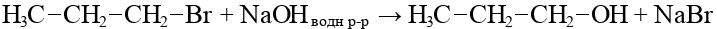

Определение
Спирты — это органические вещества, содержащие в молекуле одну или несколько гидроксильных групп (является функциональной группой спиртов).
Общая формула одноатомных спиртов:
CnH2n+1OH
Функциональная группа - группа атомов, которая обусловливает характерные химические свойства данного класса веществ.
Номенклатура и изомерия
Нумерация начинается от ближнего к гидроксильной группе края.
По числу гидроксильных групп спирты делятся на следующие группы:
- Одноатомные
- Двухатомные (гликоли)
- Трехатомные
По характеру углеводородного скелета выделяют спирты:
- Предельные, содержащие в молекуле только предельные углеводородные радикалы.
- Непредельные, содержащие в молекуле кратные (двойные и тройниые) связи между атомами углерода
- Ароматические, содержащие в молекуле бензольное кольцо.
Отличаются от спиртов по химическим свойствам, поэтому выделяются в отдельный класс соединений - фенолы.
По характеру атома углерода, с которым связана гидроксильная группа, спирты делятся на три группы:
- Первичные
- Вторичные
- Третичные
Изомерия:
- Изомерия углеродного скелета
- Изомерия положения функциональной группы
- Межклассовая изомерия (с простыми эфмирами)
Физические свойства
- C1 - C11
- — жидкости
- C12 - ...
- — твердые
Отсутствие газов объясняется водородными связями между молекулами спиртов
Водородная связь - это вид межмолекулярной связи, которая возникает при участии атома H одной молекулы и атома с большой электроотрицательностью другой молекулы (O, N, F, Cl)
Получение
- Гидролиз галогеналканов:

- Гидратация алкенов:
первичные спирты образуются только при гидратации этена, при гидратации пропена и далее образуются вторичные спирты
- Гидрирование альдегидов и кетонов:
- Окисление алкенов:

- Брожение глюкозы:
C6H12O6→2C2H5OH + 2CO2 - Метанол получают при взаимодействии водорода с угарным газом при повышенном давлении и высокой температуре на поверхности катализатора (оксида цинка):
Химические свойства
Одноатомные спирты
- Взаимодействие с щелочными металлами:
- Галогенирование:
- Дегидратация:
Внутримолекулярная:

Межмолекулярная: - Дегидрирование:
Первичные спирты:

Вторичные спирты: - Взаимодействие с карбоновыми кислотами:
- Окисление
Первичные спирты:
Вторичные спирты:
Многоатомные спирты
- Взаимодействие с Cu(OH)2 (является качественной реакцией):
Реакция идет только в том случае, если гидроксогруппы расположены у соседних атомов углерода - Взаимодействие с Na и NaOH:
- Взаимодействие с галогенводородами:
- Взаимодействие с азотной кислотой:
- Окисление:
Оксидом меди:
Перманганатом калия: